Overview
- Target audience
- Data Stewards
- Cross-functional Partners
- UX Lead | Product Managers | UX & Visual Designers | Engineers
- My Role
- UX Research Intern
- Timeframe
- July 2020 - August 2020 | Reltio Internship Project
- Problem Statement
- Increasing efficiency of Bulk Edit Action function and to ensure users accurately execute Bulk Edit.
- Goal of the study
- The goal of this study was to understand how Bulk Actions was currently being leveraged by end users and user should be less confused or anxious when executing Bulk Edit compared to Classic View
- Methods Used
- Heuristic Evaluation | Persona creation | In-Depth interviews | User Journey map | Usability testing | Metrics and goal setting | Task flow creation | Post Study Survey
- Impact
- The research study and subsequent design changes resulted in a 20% reduction of error rate | Increase in adoption rate by 15%
Impact
The research study and subsequent design changes resulted in a 10% reduction of error rate | Increase in adoption rate by 20%
"Sagarika was the UX Researcher for the Search UI project. She is curious by nature and she set up meetings with me to ask questions while she was trying to understand the product. She was a great team player and is not afraid of speaking her mind when it's in the interest of users"
-- Recommendation from Product Manager Prasad Satam
The Problem
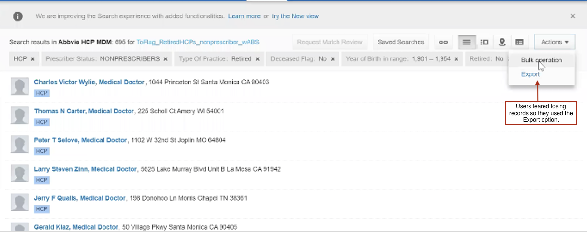
Bulk Actions are an efficient way to complete certain actions at once, often to multiple sections as opposed to completing the same action in multiple attempts. The goal of Bulk Actions is to ensure Data quality is high as possible.
For example, you can perform a bulk action to: Add a new tag to multiple records running up to 10's of thousands as opposed to adding a tag to each record.
The Problem. As a data steward, it would be difficult to change the city of 5,000 recently uploaded profiles. It would be very inefficient to do this one by one, therefore, it would be done in bulk. These tasks could be carried out in the Classic Search UI (existing interface), but the New Search UI did not offer the same feature.
When you were on the New Search UI, you were forced to save the search, open it in Classic Search and conduct bulk operations.
As a Data Steward it was not possible to maintain two Search UI features. It was necessary to manage both the UIs because the New Search UI has some gaps when compared to the Classic Search UI. Bulk operations being one of the biggest gaps between the two.
Research Foundation
I spent around three days to understand the background, context, different use cases, business requirements, work objectives, and technical concepts of using Bulk Action. I used a Learning Plan* to organize my ideas, to see more clearly what questions need to be answered and hold discussions with stakeholders.
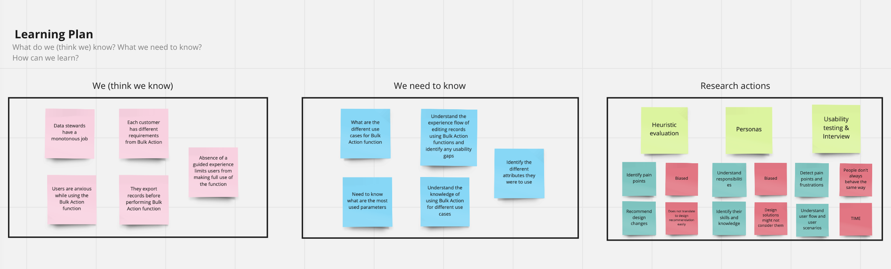
Research Process
My Research Process
In the early stages of exploring the problem space and solutions, we listed a number of assumptions about what a Bulk Action Function should look like. In order to validate these assumptions with stakeholders, I interviewed the product manager, designers, Customer support team and Data Stewards. This helped us align our expectations about what to test, what not to test, and how long it could take.
First I created a persona following the interactions with users to understand the diverse user background and different goals, responsibilities and frustrations they had while using Bulk Action function. I proposed creating a user journey map in the exploratory stage to supplement the interviews to better understand the users' mental model and expectations of how a Bulk Action Function should work. I also conducted a Heuristic Evaluation as it would help us identify user pain points and frustrations. I also thought it was best to do a usability testing and an interview as we were interested to know what roadblocks exist in the current feature. It has some advantages: flexible timing, direct observation and detailed feedback. A final usability testing was also conducted to test the final iteration of the interface with users before the launch of the feature.
Research Goals
The goal of this study was to understand how Bulk Actions was currently being leveraged by our end users.
To understand this, we need to study the following specific areas:
- How are users currently using Bulk Actions?
- What issues are they having with the current experience?
- What other enhancements would they like to see?
This would help us in delivering these results:
- User should more efficiently execute Bulk Edit more compared to Classic View
- User should be less confused or anxious when executing Bulk Edit compared to Classic View
- Users should be able to accurately execute Bulk Edit. This measures the intuitiveness of the flow and experience.
Target Users
Customers from different industries use Bulk Action Function for different use cases. It is important to understand each users' needs to enhance Bulk Action function :
Data stewards
- Data stewards are responsible for performing Bulk Action function.
- They execute tasks given that are laid out by Data experts and created by Data configurators.
Therefore, it was important to all the customers early and align everyone's understanding and expectations. We paid close attention to collaboration at each step — working closely with the core stakeholders, and engaging the extended stakeholders at the right time. We wanted to take all stakeholders on the journey with us so that there would be no big reveal and surprises at the end of it.
Persona creation
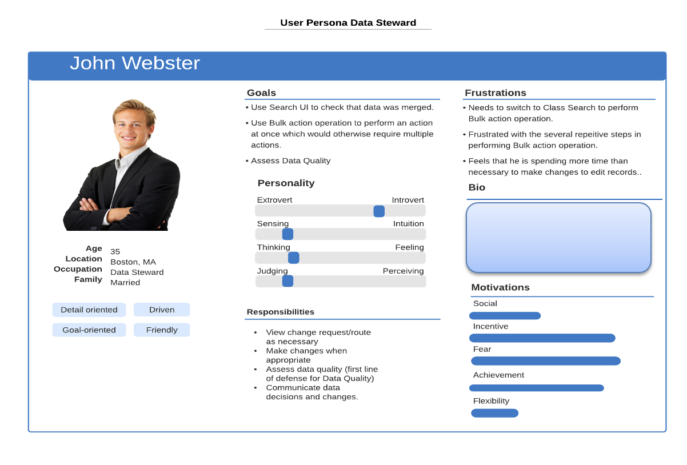
I created a Persona to understand user background, their goals and responsibilities with Bulk Action and to capture their frustrations. This persona helped the designers understand the background of the users and was used a reference while making design recommendations. Since, the feature is used by a diverse set of users persona creation helps narrow down the common goals, responsibilities and frustrations users have with the feature.
Understanding user journey
To understand the feature better, I created a User Journey Map after talking to stakeholders and interviewing data stewards and the customer support team. After interacting with the customers I chose a scenario that they perform regularly and created journey map to understand their mental model about Bulk Action Function, how they select the records for editing them, their pain points/frustrations and captured their emotions.
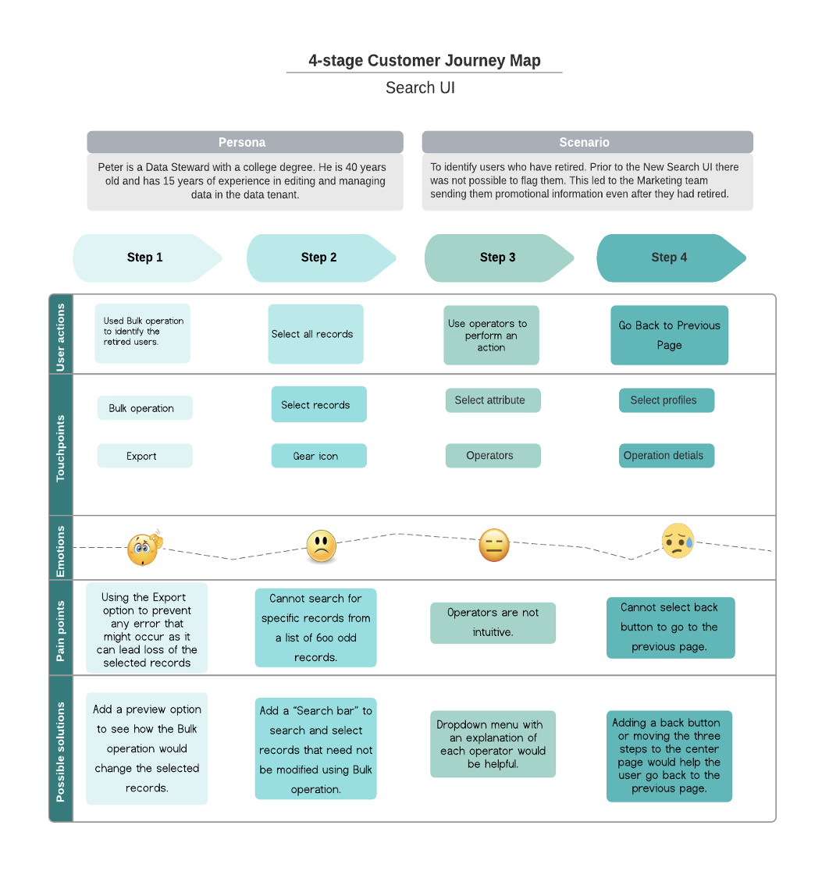
Heuristic Evaluation
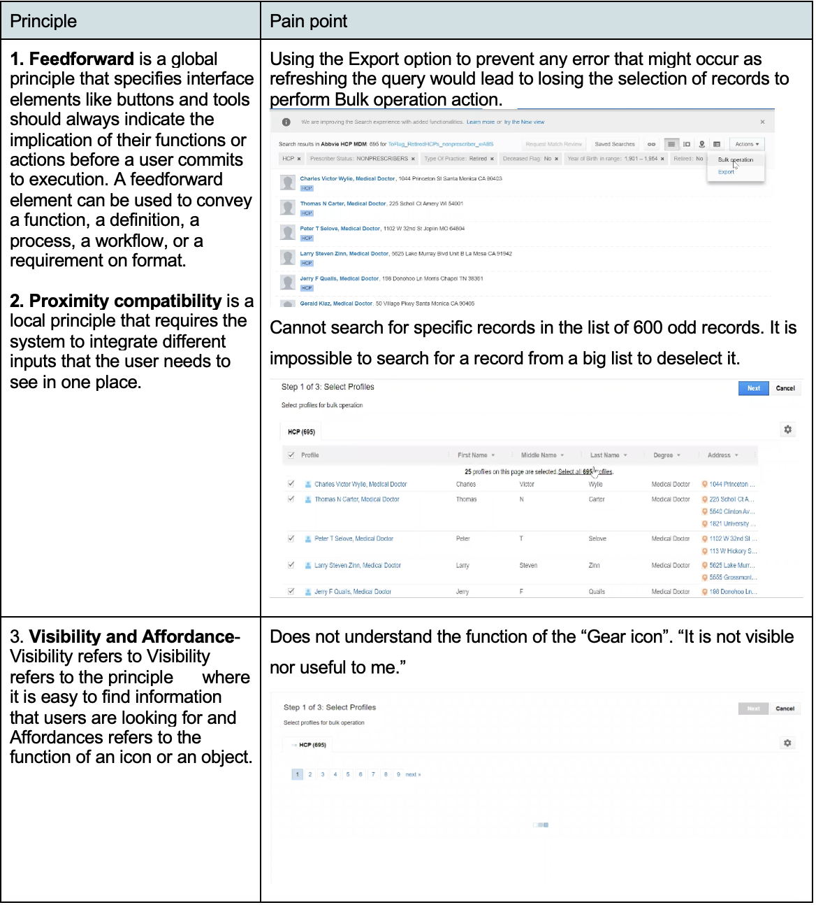
I conducted a Heuristic Evaluation to capture user pain points and frustrations by identifying usability issues. It is a relatively quick method of gathering feedback and didn't require much time or input from other core stakeholders.
Remote Usability testing and interview
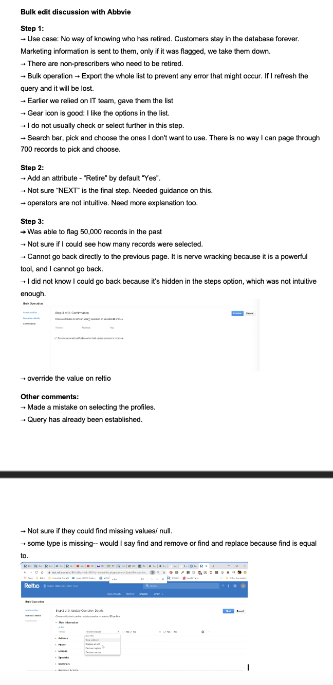
Example
Before the final testing, I did some pilot testing with the team members and who helped me finalize my research plan and the testing duration.
I conducted 5 (1 hour) usability sessions on the Bulk Action Function prototype with Data Stewards in the United States.
During the testing sessions, I also invited the PM, my manager and the designer to observe my sessions to avoid bias and showcase user thinking and value the importance of research work.
Tasks:
- Edit HCP records with Simple attribute- status "Active" to "Inactive" for records Age>65 and License=Expired
- Edit HCP records with Nested attribute- Entity type = Contacts; change email address / domain = globex
- View Status under tenant management
- Receiving email
Metrics:
Editing records is as important as injecting records for the company, since our users were not using the feature and had low success rate, we wanted to create a guided experience where tasks are easy to complete, and the interface is very easy to navigate, Thus, the following metrics were selected to measure and monitor the impact of the design.
- Error rate
- Adoption rate
- Ease of use for each task
Data analysis
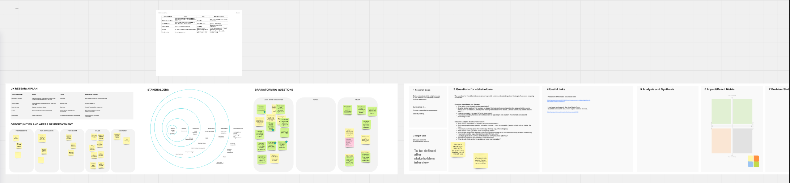
I used Miro board to analyze data. I added stakeholder information, the research goals, research methods, prioritization matrix and I created a task-based data log, to capture for each of the 5 participants during testing session.
For this project I used Thematic analysis to synthesize the data to convert into actionable design changes. To achieve this I did the following:
- Coding data and creating themes
- End of day debriefs after testing
- Video watching and insights analysis
- Issue prioritization
After each session, I had a quick debrief with stakeholders to ensure they were getting the insights they needed and get consensus on the information we were getting. Then, I went back and watched videos to synthesize insights.
Issue prioritization
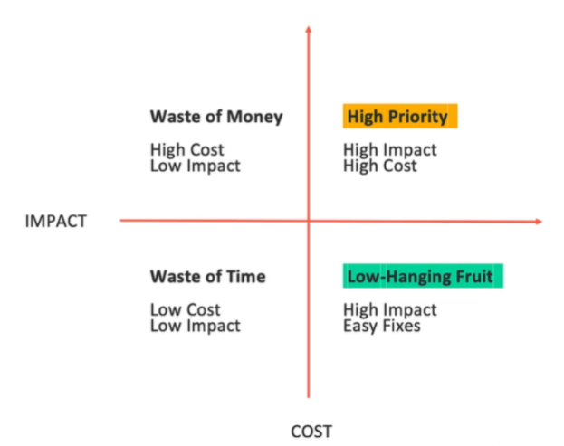
Since the scope of the project is vast it was necessary to prioritize the research findings. High-level ranking of which features matter most to our users was presented to the C-level executives.
To utilize all stakeholders' knowledge to prioritize the proposed initiatives, I facilitated a meeting with 5 stakeholders involved in the Data Validation function building process to discuss my prioritization of each feature and different workload for research findings.
As a result, the research findings that belong to the category of High Priority and Low-Hanging fruit are our focus in the next iteration.
UI Design
A final usability testing session was conducted with the same participants to find any usability issues with the new interface and gather feedback. The results from these sessions were then shared with the design team. The subsequent design changes were made based on the recommendations shared with the design team.
Evaluative usability testing
After the final prototype was ready, I set up usability testing with 2 out of 5 participants interviewed earlier. They were given the same tasks and asked to give their feedback on overall usability of the feature. Error rate and Ease of use rate was both measured to compare with the Formative usability testing results. The final prototype as seen below was finalized and was shipped to the engineering team.
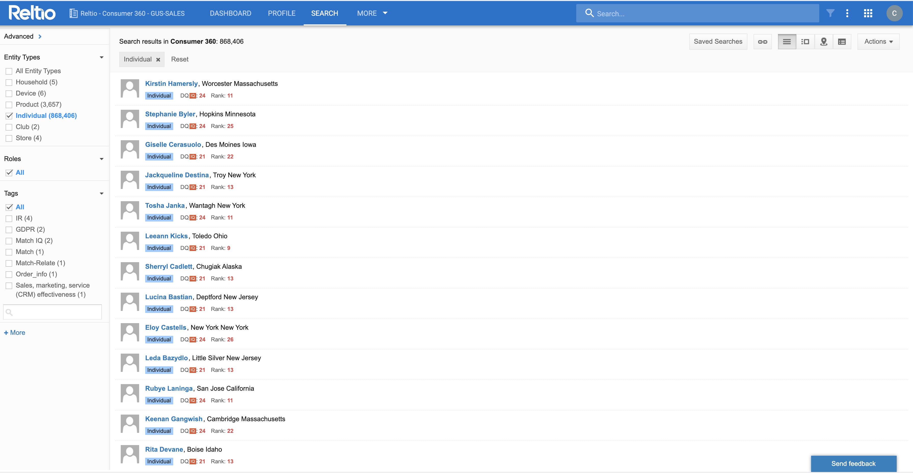
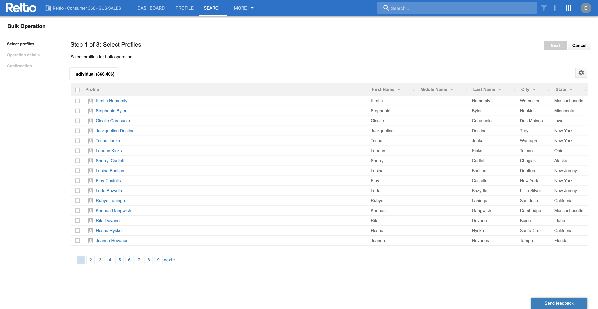
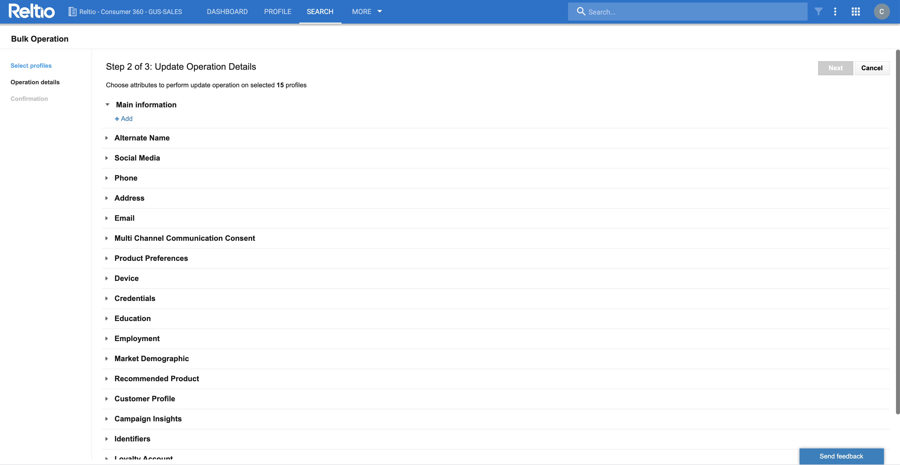
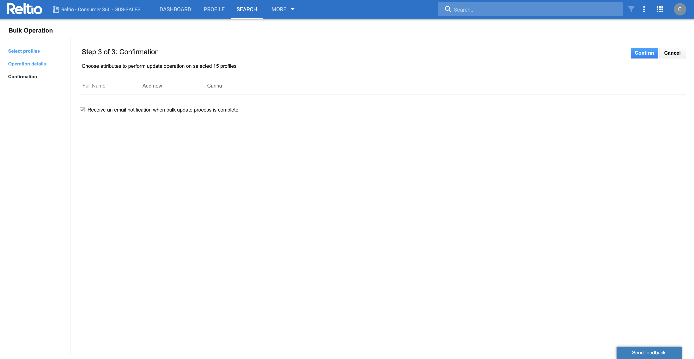
Impact
Research Insights
Error Rate
Error rate was calculated as a quantitative measure of how many visible errors users committed while using Bulk Action function. There was a 20% decrease in the overall error rate. During evaluative usability testing sessions users also gave positive feedback on the guided experience with the addition of progress status and back button this also served as a measure of success and the errors that could be avoided while using Bulk Action function. The users also remarked on not being anxious while using the Bulk Action function adding real time "save feature".
Adoption Rate
Apart from the existing users we gathered data from the data analytics team on new users using the Bulk Action function. This resulted in a 15% increase in adoption rate of the Bulk Action function. More users were able to use the feature without consulting the "IT team".
What have you learned from this project?
The biggest learning from this project was how important it is to consult users in the early stages of product development. Although, existing feature was used by customers for different use cases they were not happy with the experience and were hesitant to use it. So, in the current research study I made sure to interact with users right from the beginning of the research process to gather their feedback using different UX methods. Not only was this helpful to implement final design changes but also map future directions for the product better.
Despite making a very thorough research study not all recommendations were considered by the engineering team. In fact, there was a lot of back and forth on what should be pushed for development for several reasons like time and resource constraints. One of the key remark from the engineering team was that the design was great for the user but would end up taking a lot of time for them. So after issue prioritization and final recommendations were made we had to go back and re-evaluate the most important features that needed to be changed. We ended up prioritizing the real time "save" option, search bar and progress bar as the top priority for the current sprint cycle.
As a UX Research intern this was a great lesson for me, that just because we were able to do a thorough research study it cannot be fully taken into consideration and I need to learn how to not take it as a failure on my part but prioritize user needs even in a challenging situation like this and make sure to move things forward.